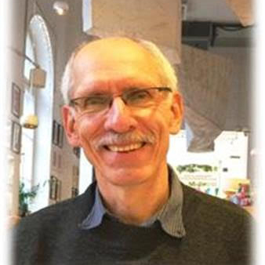

Harry Irrgang
Pastor & Church Administrator
Welcome!
If you have recently moved to Warsaw, and are looking for a church home or a congregation to
visit, we welcome
you to our worship!
If you are planning travels and will be in Warsaw on a Sunday, we welcome you to our worship!
If you are a long-term resident of Warsaw and are in search of an English-language
congregation, we welcome you
to our worship!
Whether you are a diplomat, student, business executive, teacher, refugee, artist, musician or
“you name it!” we
welcome you!
Wherever you are in your spiritual journey, if you are in this region, you are welcome, whether
to visit for a
day or to make WIC your spiritual ‘home' away from home.
Warsaw International Church is an international, interdenominational congregation within the
worldwide Body of
Christ. We seek to live lives of faithfulness, joy, and service to one another as we express
our shared
Christian faith. We celebrate that ours was the first English-language congregation to worship
in Warsaw during
the latter Communist period of the late l970s. The congregation worshipped in private in those
days. After the
fall of communism in l989, we were the first to become a public congregation at our wonderful
site on the edge
of Old Town. We are still there at 21 Miodowa in the Protestant-Orthodox Seminary.
We are truly international. Normally at Sunday worship, one can expect to see about ten
different countries
represented, and sometimes more. As people from many different national and cultural
traditions, our common
language of worship is English, and we celebrate together the universal goodness of our God.
We are interdenominational. Because the Church of Jesus Christ is bigger than any one
denomination, we celebrate
the diverse backgrounds of our members and participants. We rejoice in the gifts that come from
the many
denominational backgrounds represented among us. And we welcome everyone’s involvement.
It is our prayer that by your participation in our midst, WIC will be a blessing to you as you
will be to us.
Together we can be more faithful and more whole in our lives as Christians in the community. If
you have any
further questions, please contact me (pastor), using the information on the main page.
And, again, welcome!
God bless and keep you!
Warsaw International Church